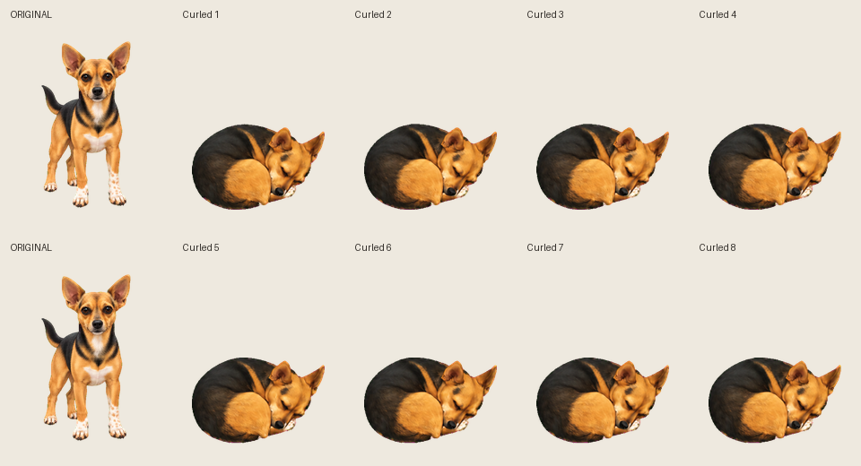

SLEEPING VARIANT · POSE AND STYLE APPROVED
Ronnie curled in her bed
Her sleeping position follows your photo, with the bed saved separately. Pose and style approved by Josh. Breathing remains barely visible at this size, and small ear/head and coat variations remain. This is not yet an approved refined breathing loop.
Original · style reference
Curled sleep · candidate
The preview starts paused. Play cycles eight poses over four seconds. Layer controls demonstrate that the dog sprite contains no bed. Her position stays fixed within the bed.
Compare all eight poses

Combined GIF · Dog-only GIF · Separate bed PNG · Stage notes
The five base movements are approved. Josh approved this curled pose. The approach and circle draft is now available for the next checkpoint. The original atlas and game remain unchanged.